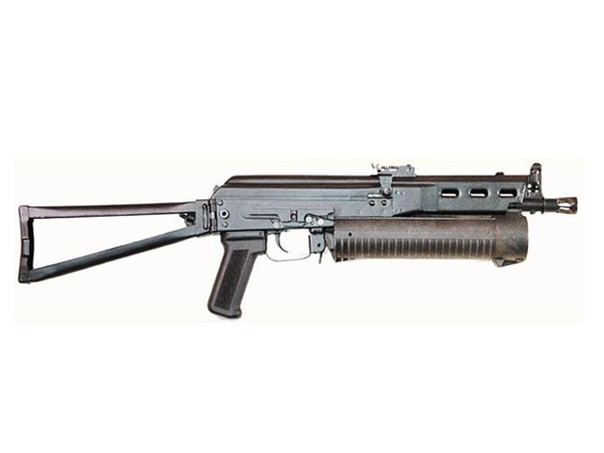

Rifles de tirador
El rifle de francotirador es un tipo de arma que permite el disparo a objetivos a muy larga distancia buscando la mayor precisión posible en el disparo, para lo cual va equipado con una mira telescópica y utiliza munición específica para el arma que permita alcanzar largas distancias sin perder precisión de tiro.



Fue desarrollado en Rusia y está destinado principalmente a unidades policiales que necesitan disparos rápidos y precisos a corta distancia .
- En servicio desde 1996.
- Arma antiterrorista.
- Fuego selectivo.